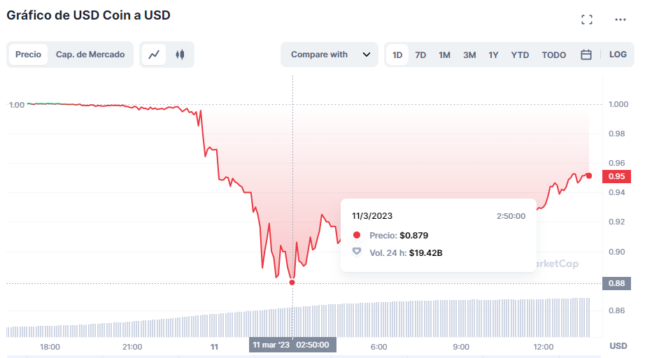

En las últimas horas se ha registrado una disminución en el precio de USD Coin, una stablecoin diseñada para mantener un valor constante de USD 1. Esta caída en el valor de USD Coin se debe a que Circle, la compañía emisora de esta stablecoin, tenía más de USD 9.800 millones de dólares depositados en el Silicon Valley Bank, el cual recientemente cerró sus operaciones. Dicho depósito servía como garantía para respaldar el valor de USDC, por lo que su retirada ha generado cierta inquietud entre los inversores.
Fuente de imagen: CoinMarket
En este sentido, algunos inversores han optado por vender sus tenencias de USD Coin ante el temor de que su valor siga disminuyendo. Por otro lado, existen otros inversores que aprovechan la situación para adquirir USD Coin a un precio inferior al valor nominal, con la expectativa de que en el futuro el valor de la stablecoin se recupere.(Esto ha sido frenado y comunicado por Circle)
Como resultado, el valor de USD Coin ha disminuido a mínimos históricos de USD $0,87 el sábado pasado, según los datos de CriptoMercados. Esta situación también ha motivado un aumento en la quema o eliminación de USDC, con datos de la firma Nansen recogidos por The Block que informan de una quema de USD $2.340 millones en las últimas 24 horas.Circle ha tranquilizado a los inversores en un tweet, asegurando que tanto la empresa como su stablecoin continúan operando normalmente. Esta noticia ha generado interés en el mercado de las criptomonedas y se espera que se siga monitoreando la situación para ver cómo afecta el valor de USD Coin en el futuro. Estaremos atentos a cualquier novedad que pueda surgir en relación a este tema y mantendremos informados a nuestros espectadores. Hoy 02 de marzo del 2024 escribo despues de lo acontecido hace 1 año,afortunadamente no sucedio a mayores y no hubo caida del USDc siguio hacia adelante y acutalmente hay una carrera en la criptomonedas debido a una alta especulacion